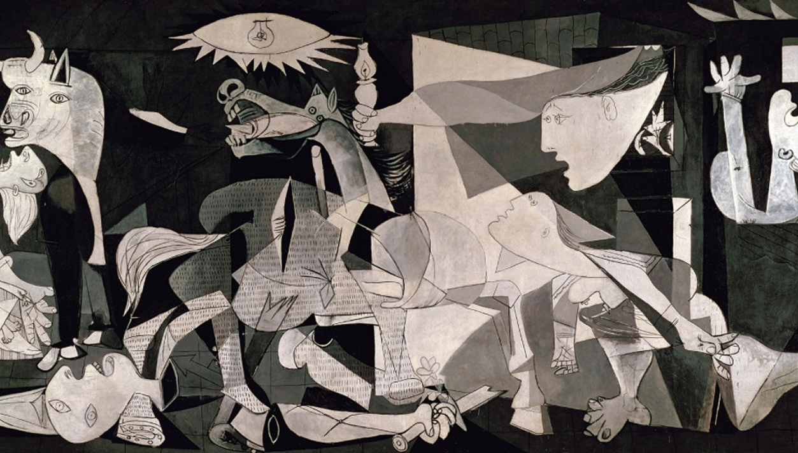
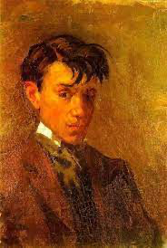

Guernica
Pablo Picasso

Guernica
Pablo Picasso
1937
1937 The scene occurs within a room where, on the left, a wide-eyed bull stands over a grieving woman holding a dead child in her arms. In the center of the room a horse falls in agony with a large gaping hole in its side, as if it had just been run through by a spear or javelin. The horse appears to be wearing chain mail armor, decorated with vertical tally marks arranged in rows. A dead and dismembered soldier lies under the horse. The hand of his severed right arm grasps a shattered sword, from which a flower grows.
GO TO SOURCE